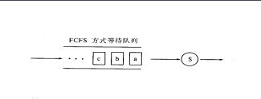

前言
用JAVA模拟进程调度过程。
实验目的及要求
进程调度是处理机管理的核心内容。本实验要求用高级语言编写模拟进程调度程序，以便加深理解有关进程控制块、进程队列等概念，并体会和了解先来先服务（FCFS算法）、短进程优先（SJF算法），优先权（PSA算法）、高响应比优先（HRN算法）等调度算法的具体实现。
基本理论介绍
处理机调度的基本概念
处理机是计算机系统中的重要资源，处理机调度算法不仅对处理器的利用效率和用户进程的执行有影响，同时还与内存等其他资源的使用密切相关，对整个计算机系统的综合性能指标也有重要影响。
进程调度方式
抢占式（剥夺式）
当一个进程正在处理器上运行时，系统可以根据规定的原则剥夺分配给它的处理器，而把处理器分配给其它进程使用
非抢占式（非剥夺式）
一旦某个进程开始执行后便不再出让处理器，除非该进程运行结束或发生了某个事件不能继续执行。
本实验所使用的调度算法
a）先来先服务（FCFS）
按照进程进入就绪队列的先后顺序调度并分配处理机执行。先来先服务调度算法是一种非抢占式的算法，先进入就绪队列的进程，先分配处理机运行。一旦一个进程占有了处理机，它就一直运行下去，直到该进程完成工作或者因为等待某事件发生而不能运行时才释放处理机。
（1）系统只有按FIFO规则建立的后备作业队列或就绪进程队列即可，就是一个作业控制快JCB或进程控制块PCB加入队列时加在相应队列末尾。
（2）调度退出队列时从相应队列首开始顺序扫描，将相关的JCB或PCB调度移出相应队列。
（3）优缺点：有利于长作业（进程）而不利于短作业（进程）；有利于CPU繁忙型作业（进程），而不利于I/O繁忙型作业（进程）。

b）非剥夺式的短作业优先算法（SJF）
短进程优先算法是以作业的长短来计算优先级，作业越短，其优先级越高。作业的长短是以作业所要求的运行时间来衡量的。在把短作业优先调度算法用于作业调度时，它将从外存的作业后备队列中选择若干个估计运行时间最短的作业，优先将它们调入内存运行。
(1)比FCFS改善平均周转时间和平均带权周转时间，缩短作业的等待时间；
(2)对长作业非常不利，可能长时间得不到执行；未能依据作业的紧迫程度来划分执行的优先级；难以准确估计作业（进程）的执行时间，从而影响调度性能。
c）非剥夺式的优先级算法（PSA）
优先级算法是多级队列算法的改进，平衡各进程对响应时间的要求。适用于作业调度和进程调度，可分成抢先式和非抢先式。
作业调度中的静态优先级大多按以下原则确定：
（1）由用户自己根据作业的紧急程度输入一个适当的优先级。
（2）由系统或操作员根据作业类型指定优先级。
（3）系统根据作业要求资源情况确定优先级。
d）最高响应比优先法（HRN）
最高响应比优先法(HRN，Highest Response_ratio Next)是对FCFS方式和SJF方式的一种综合平衡。FCFS方式只考虑每个作业的等待时间而未考虑执行时间的长短，而SJF方式只考虑执行时间而未考虑等待时间的长短。因此，这两种调度算法在某些极端情况下会带来某些不便。HRN调度策略同时考虑每个作业的等待时间长短和估计需要的执行时间长短，从中选出响应比最高的作业投入执行。
响应比R定义如下：
R =(W+T)/T = 1+W/T
其中T为该作业估计需要的执行时间，W为作业在后备状态队列中的等待时间。每当要进行作业调度时，系统计算每个作业的响应比，选择其中R最大者投入执行。这样，即使是长作业，随着它等待时间的增加，W / T也就随着增加，也就有机会获得调度执行。这种算法是介于FCFS和SJF之间的一种折中算法。由于长作业也有机会投入运行，在同一时间内处理的作业数显然要少于SJF法，从而采用HRN方式时其吞吐量将小于采用SJF 法时的吞吐量。另外，由于每次调度前要计算响应比，系统开销也要相应增加。
实验内容
1.设计进程控制块PCB的结构，通常应包括如下信息：
进程名、进程优先数、进程的到达时间、服务时间、进程的状态等
2.编写四种调度算法程序：
FCFS 非抢占SJF 非抢占PSA HRRN
3.输入参数。
输入进程数目
各进程的相关数据（进程ID,到达时间，服务时间，优先级等）
4.选择调度算法
5.按要求输出结果（界面简洁美观）
1）要求输出调度过程
2）要求输出各进程在不同的算法下的完成时间，周转时间，带权周转时间，平均周转时间，平均带权周转时间，以及调度顺序。
功能实现
定义JCB（或PCB）
1 | |